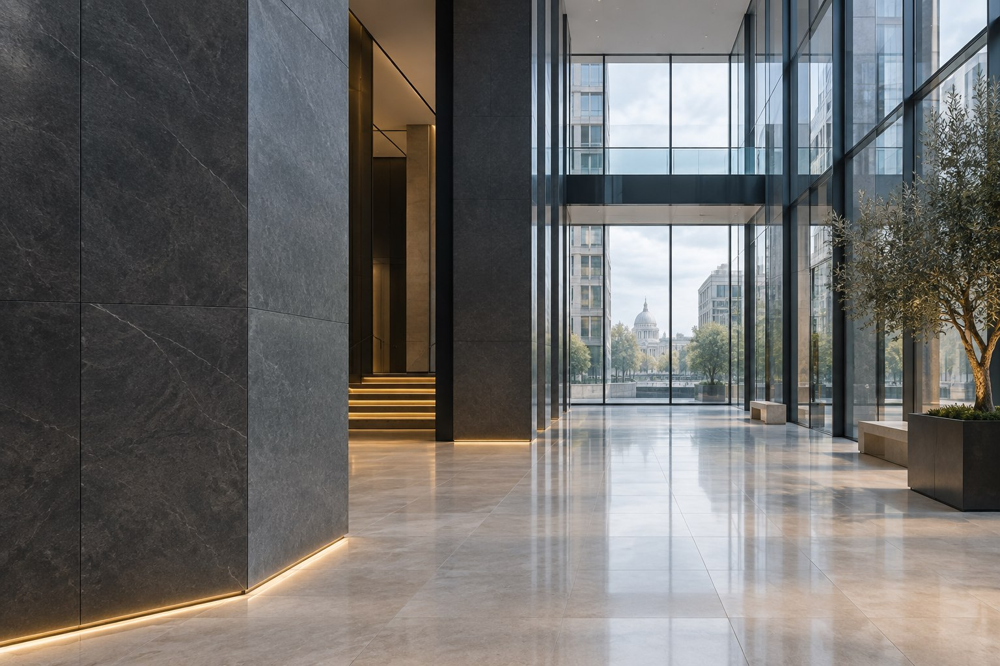
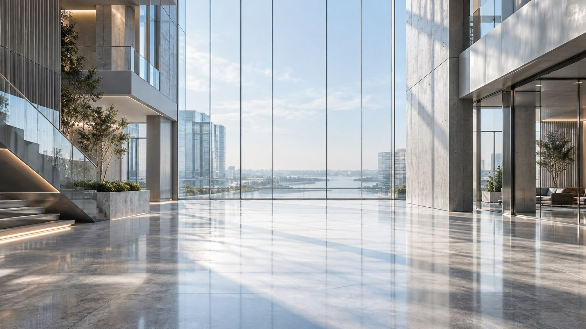

Не просто «сделано».
Видно, что сделано.
Фотографии, файлы и комментарии остаются в журнале объекта. К результату можно вернуться в любой момент.
Выберите карточку. Нажмите на её название, чтобы открыть детали.
Люди приходят на смену. Оборудование требует внимания. Задачи становятся выполненной работой.
Anyloc собирает всё это в одну понятную картину.
От касания — к результату ↗
Сотрудник отмечается у входа. Руководитель видит, кто уже на объекте, когда началась смена и сколько времени отработано.
Отметка, работа и результат —
в одной последовательности.
От общей картины — к конкретному сотруднику, отчёту или задаче. Без поиска по перепискам.
Фотографии, файлы и комментарии остаются в журнале объекта. К результату можно вернуться в любой момент.
Выберите карточку. Нажмите на её название, чтобы открыть детали.
Руководители, подрядчики и сотрудники видят доступные им объекты и задачи.
Настройте назначение и привязку: посещения или журнал. Каждое касание ведёт к нужному сценарию.
Фильтруйте события по объектам, людям и датам. Выгружайте нужную выборку для дальнейшей работы.
NFC-метка на объекте, совместимый смартфон с приложением Anyloc и доступ руководителя к веб-панели. Объекты, сотрудников и права доступа настраивает администратор.
Для NFC-отметок предусмотрена офлайн-очередь. Когда связь появится, приложение отправит сохранённые события. В панели они появятся после синхронизации и проверки сервером. Доступность сценария зависит от устройства и настроек.
Да. В Anyloc предусмотрены объекты, подрядные организации и их сотрудники. Можно смотреть общую картину и переходить к деталям конкретного подрядчика.
Метка посещения используется для учёта присутствия. Метка журнала связана с отчётностью о работе на объекте. Назначение и привязки задаются при настройке меток.

Ваша команда. Ваши объекты.
Одна понятная картина.